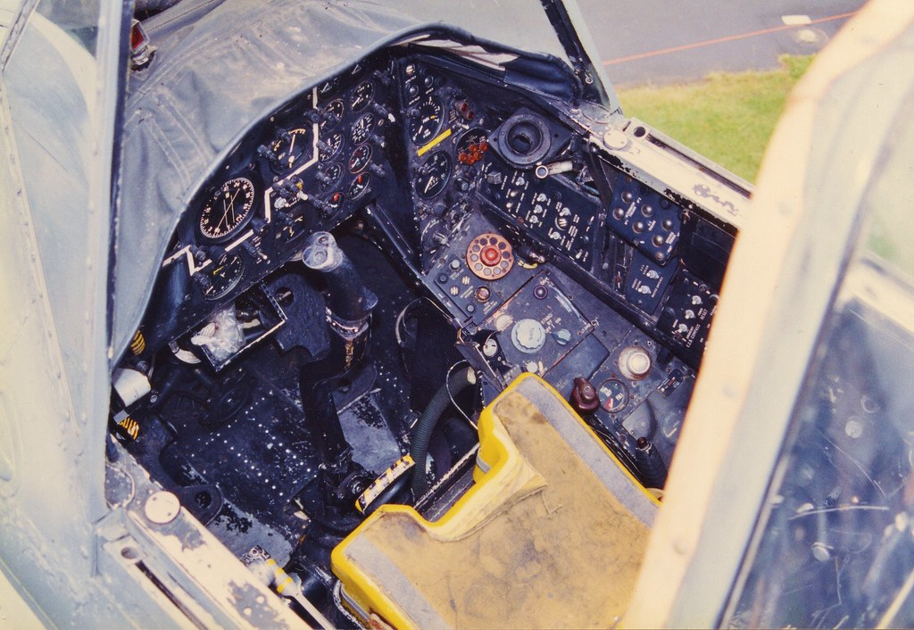

Synopsis
The Fairey Gannet AEW.3 was a British carrier-based aircraft primarily designed for airborne early warning (AEW) missions. It was based on the Fairey Gannet anti-submarine warfare aircraft and was operated by the Royal Navy's Fleet Air Arm from the 1950s to the 1970s.The aircraft was equipped with a large radar dome located in a bulbous radome mounted on top of the fuselage, giving it the distinctive "double-bubble" appearance. The radar system was capable of detecting and tracking targets at long ranges, making it an effective platform for AEW missions.The Gannet AEW.3 was powered by two Armstrong Siddeley Double Mamba turboprop engines, which gave it a top speed of 240 knots and a range of over 1,000 miles. It was armed with four 20mm Hispano Mk.V cannon and could also carry a variety of missiles and rockets.In addition to its AEW role, the Gannet AEW.3 was also used for search and rescue missions, electronic countermeasures, and as a general utility aircraft. It served in various conflicts, including the Suez Crisis and the Falklands War.The Gannet AEW.3 was retired from service in the 1970s, but its legacy continues through the development of modern AEW aircraft such as the E-2 Hawkeye and the Sea King AEW.
Design
The Fairey Gannet AEW.3 was designed as an airborne early warning (AEW) aircraft for the Royal Navy. It was based on the Gannet ASW (anti-submarine warfare) aircraft and incorporated a radome on top of the fuselage to house a search radar.The design process for the Gannet AEW.3 involved extensive modifications to the original Gannet ASW design. In addition to the radome, the aircraft was fitted with a large dorsal fin to improve stability, and an extended tailcone to house the necessary avionics and electronic equipment.The cockpit was relocated forward to make room for the radar operator's station, and the aircraft was fitted with two Armstrong Siddeley Double Mamba turboprop engines to provide the necessary power for the added weight of the radar and equipment.Overall, the Gannet AEW.3 was a unique and effective design for its intended role, and it served with the Royal Navy for many years

Retirement and Legacy
The Fairey Gannet AEW.3 was retired from active service in 1978, with a total of 44 aircraft produced. Its retirement was due to the increasing use of radar-equipped helicopters and fixed-wing aircraft for airborne early warning and control.Despite its retirement, the Gannet AEW.3 left a lasting legacy as one of the first carrier-based airborne early warning aircraft. It was a significant advancement in naval aviation technology and demonstrated the capability of providing a long-range surveillance and control system for naval operations.The Gannet AEW.3 also paved the way for other advanced early warning aircraft such as the Hawkeye and the E-2D, which continue to serve as essential components of modern naval air forces. The aircraft also remains a popular subject for aviation enthusiasts and scale modelers.